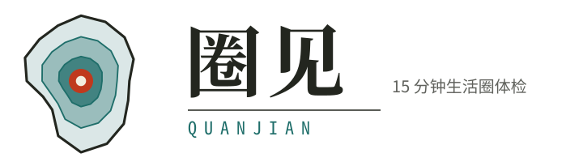
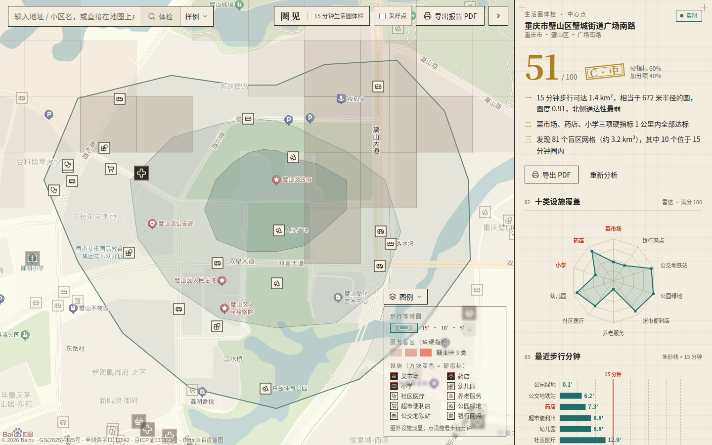
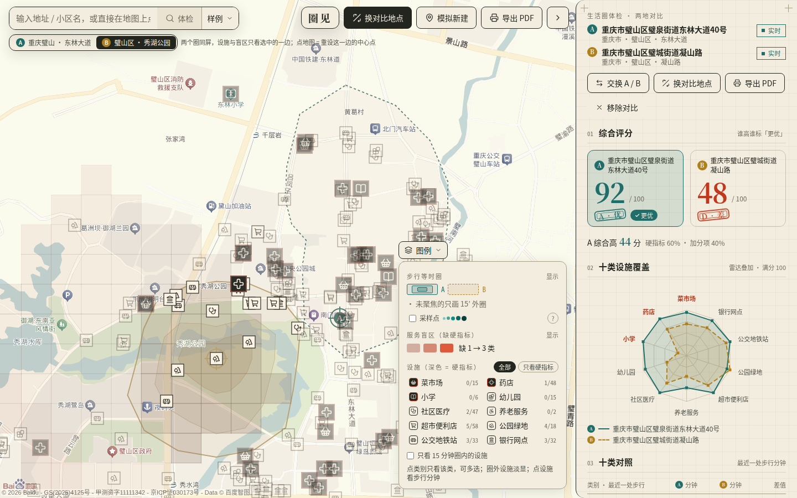
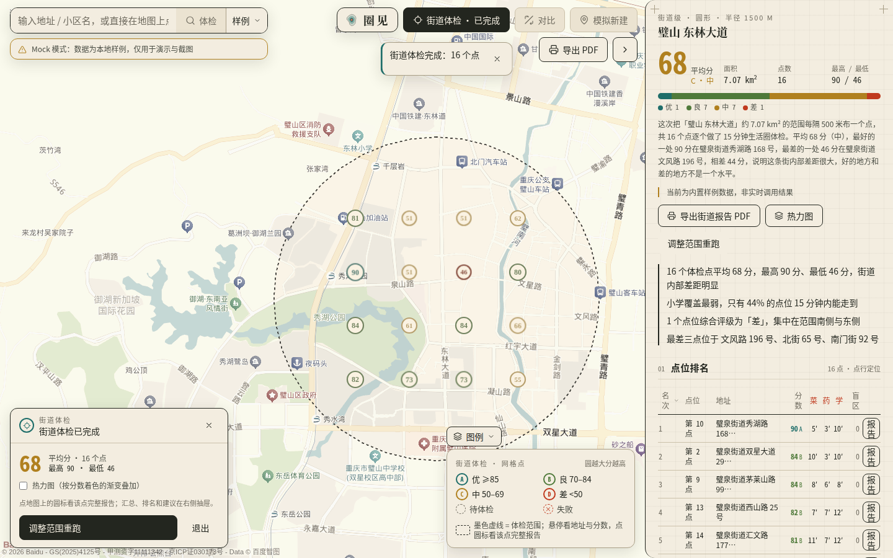

使用指南 · v0.1.0
github.com/chunge-php/quanjian
2026-09-08
圈见 · 使用指南
面向普通用户与评委。从零启动约 3 分钟；没有百度 AK 也可以用内置样例走完全部场景。
01安装与启动
路线 A · Docker 一键（推荐）
git clone https://github.com/chunge-php/quanjian.git
cd quanjian
cp .env.example .env # 填两个 AK，留空=样例
bash scripts/demo.sh # Win: scripts\demo.cmd
# http://localhost:3010 ；停止 demo.sh down
或直接拉镜像 ghcr.io/chunge-php/quanjian:latest（-p 3010:3010，--env-file .env）。镜像不含 AK。
路线 B · 本地 pnpm
bash scripts/setup.sh # 查 node>=20/pnpm，生成 .env.local
# 编辑 .env.local 填入 AK
pnpm dev # http://localhost:3010
# 生产：pnpm build && pnpm start
启动后 /api/health 应返回 { ok: true }；页面顶部出现黄色「样例模式」= 未读到服务端 AK。
百度地图 AK 申请（5 步）
1
注册认证。登录 lbsyun.baidu.com，完成开发者认证（个人开发者即可，免费配额足够体验）。
2
进入控制台。应用管理 → 我的应用 → 创建应用。
3
创建服务端应用。类型选「服务端」，启用地理编码、逆地理编码、地点检索、批量算路（天气、静态图可选）；IP 白名单填服务器出口 IP，本地体验可先填 0.0.0.0/0、上线前收紧。得到的 AK 填入 BAIDU_SERVER_AK。
4
创建浏览器端应用。类型选「浏览器端」，Referer 白名单填 localhost:3010/* 与你的域名。得到的 AK 填入 NEXT_PUBLIC_BAIDU_BROWSER_AK。
5
看配额。「配额管理」确认批量算路的每日调用量与并发；个人 AK 保持 BAIDU_MAX_CONCURRENCY 为 2–3，调大只会触发 401 限流。
.env 里两个 AK 的区别
| 变量 | 在哪用 | 安全边界 |
|---|
| BAIDU_SERVER_AK | Node 进程内调地理编码 / 地点检索 / 批量算路 | 从不下发到浏览器、不进日志与 SSE；靠 IP 白名单保护 |
| NEXT_PUBLIC_BAIDU_BROWSER_AK | 仅 JSAPI GL 渲染底图，会内联进前端 JS | 必然公开，靠 Referer 白名单保护；被盗用会计入你的配额 |
两个 AK 必须是两个不同的应用。可选：BAIDU_MAX_CONCURRENCY（默认 3）、BAIDU_QPS（默认 20）、ALLOW_SAMPLE_FALLBACK（默认 true）。
圈见 · 使用指南01
圈见 · 使用指南02 · 界面总览 ／ 场景 1 · 单点体检
02界面总览

1
2
3
4
5
6
7
图 1 · 主界面（示例：璧山区璧城街道广场南路，51 分 C 级）。
1搜索框：输入地址 / 小区名，边输边联想（同城候选优先），↑↓ 选择、回车定位并体检；旁边「样例」下拉可直接加载内置样例。
2顶栏：圈见 · 15 分钟生活圈体检；单点完成后这里出现「对比」「模拟新建」「街道体检」入口。
3采样点开关：显示 112 个扇形采样点，颜色深浅 = 步行时长，用来看等时圈是怎么算出来的。
4导出报告 PDF：调用浏览器打印，详见场景 1 的注意事项。
5地图图例：兼图层筛选——等时圈三环、服务盲区（缺 1 → 3 类）、十类设施（深色方块 = 硬指标）。点类别可单选 / 多选。
6抽屉拖宽把手：右侧抽屉默认 400 px，按住左缘可拖到你需要的宽度；「›」收起。
7报告抽屉：从上到下依次是标题与评分、结论三条、十类雷达、最近步行分钟、硬指标卡、盲区、规划建议、等时圈、天气与 API 统计。
场景 1单点体检
1
选点。搜地址（如「重庆市璧山区璧城街道」）回车，或直接在地图上点一下，再按「体检」。
2
看进度。右侧依次：地理编码 → 扇形采样 → 批量算路 → 等时圈 → 设施检索 → 设施算路 → 评分 → 盲区。约 2 s 等时圈先画出来，6–8 s 报告完成；命中缓存时几十毫秒。
3
读报告。各节怎么看见下页表格；点地图上的盲区网格看缺失类别与建议补点方位，点设施图标看步行分钟与来源（真实算路 / 估算）。
圈见 · 使用指南02
圈见 · 使用指南场景 1（续） ／ 场景 2 · 两地对比
报告各节怎么看
| 报告节 | 怎么看 |
|---|
| 综合评分 / 评级 | 0–100，硬指标占 60%、七类加分项 40%；A ≥ 85、B ≥ 70、C ≥ 50、D < 50。菜市场 / 药店 / 小学任一为 D，综合最高 C。右上「实时 / 样例」标签是数据来源。 |
| 结论三条 | ① 等时圈面积、等效半径、圆度与最弱方向；② 硬指标 1 km 内是否达标；③ 盲区网格数与圈内数。 |
| 十类设施覆盖（雷达） | 离外圈越近分越高；红字三类是硬指标。 |
| 最近步行分钟 | 每类最近一家走过去要几分钟，越短越好；朱砂竖线 = 15 分钟。斜纹柱表示 1.8 km 内一家都没有。 |
| 硬指标卡 | 圈有 / 圈外有 / 无，最近步行分钟与设施名。 |
| 服务盲区 | 200 m 网格、1 km 内缺硬指标；给出圈内盲区格、盲区面积、三项全缺格数，以及按网格数排的缺失类别。 |
| 规划建议 | 按优先级：优先（硬指标 D 或圈内盲区簇）、建议（非硬指标 D / 硬指标 C）、改善（圆度、数量）。每条旁有「去模拟」。 |
| 等时圈 / API 统计 | 三环面积与 16 方向可达半径；本次 geocode / 检索 / 算路次数、点对数、缓存命中、限流退避、耗时。 |
导出 PDF 的注意事项。点「导出报告 PDF」会打开浏览器打印对话框：目标选「另存为 PDF」，纸张 A4；去掉「页眉和页脚」（否则每页顶部会印上网址与时间）；勾选「背景图形」（否则纸底、评级色块、雷达填充全部丢失）。建议用桌面 Chrome / Edge。图表在报告出来时已离屏预生成，不必等待。PDF 详版比屏幕多出「怎么看」说明、十类明细表、设施清单、方法说明与图签。
场景 2两地对比
1
先做一次单点体检，顶栏出现「对比」，点它进入对比模式，当前点成为 A。
2
选 B。搜地址或点地图，B 自动开始体检（与 A 串行，不会撞配额）。搜索框下方出现 A / B 两枚芯片，点谁就聚焦谁。
3
读对比。两圈同屏：未聚焦的一边只画 15 分钟外圈，设施与盲区只画聚焦一侧。抽屉内依次是综合评分（谁高谁标「更优」）、雷达叠加（A 实线青、B 虚线赭）、十类对照、硬指标、盲区与自动结论。「交换 A / B」「换对比地点」「移除对比」在抽屉顶部。

图 2 · 东林大道（A，92）vs 秀湖公园（B，48）。导出 PDF 时三段分页：对比视图 → A 完整报告 → B 完整报告。
圈见 · 使用指南03
圈见 · 使用指南场景 3 · 模拟新建 ／ 场景 4 · 街道级批量体检
场景 3模拟新建
1
进入。两个入口：顶栏「模拟新建」；或在规划建议某一条旁点「去模拟」，会直接带入该条建议的设施类别。
2
放置。左下面板选菜市场 / 药店 / 小学，进入放置模式后在地图上点一下即放一处（朱砂虚线标记 + 1 km 判定圈）；再点类别可退出放置。可放多处。
3
看效果。「效果对比」立即给出综合分与评级变化、盲区网格 / 圈内盲区消除数、受影响类别的分数与最近步行分钟变化，全部在浏览器本地重算，约 1 ms。「撤销」「清空」随时回退；「导出模拟结果到 PDF」打印的是模拟后的报告。
拟建设施只影响当前报告；重新体检或切换聚焦后拟建列表自动清空。
场景 4街道级批量体检
1
画范围。顶栏「街道体检」→ 选「圆形」（以当前中心为圆心拖半径，300–3000 m）或「框选」（在地图拖出矩形，对角线最多 6 km，超出会提示重画）。可给范围起名，用在报告标题里。
2
定参数。见下表；面板会实时显示「预计 N 个点，约 M 分钟」（每点按 6 秒估）。
3
开始。点位串行体检，地图上的圆标逐个从「待体检」变成带分数的评级色；右侧「点位排名」在第一个点出来后实时刷新。单点失败会标「失败」并跳过，不影响整批。
| 参数 | 范围 / 默认 | 含义 |
|---|
| 点距 | 200–1500 m / 500 | 网格点间距。500 m 约等于一个小区一个点；点距越小点越多、越慢。 |
| 最多点数 | 1–25 / 16 | 超过时按点距自动稀疏化。 |
| 快速模式 | 默认开 | 每点 8 方向 × 5 半径等时圈，省一半算路；关掉则 16 方向、更精细但慢一倍。 |
| 预计时长 | ≈ 6 s × 点数 | 相邻点的设施检索大量命中缓存，实际通常更快；璧山 13 点实跑 57 s。 |

图 3 · 东林大道周边 1500 m 圆，16 点，平均 68 分。圆标颜色：A 优 ≥ 85 B 良 70–84 C 中 50–69 D 差 < 50；圆越大分越高。悬停看地址与分数，点圆标看该点完整报告。
结果怎么读
- 头部：平均分与评级、范围面积、点数、最高 / 最低；一条色带显示优 / 良 / 中 / 差各几个点。
- 街道级结论：如「小学覆盖最弱，只有 44% 的点位 15 分钟内能走到」「最差三点位于 …」，按十类可达占比与盲区数生成。
- 点位排名：名次、地址、分数、菜 / 药 / 学三项最近步行分钟、圈内盲区格；每行「报告」打开该点完整报告。
- 热力图：按分数着色的渐变叠加，看系统性缺口而非单点；「调整范围重跑」保留参数改范围。
- 导出街道报告 PDF：含百度静态图（评级色多点标记）、排名表、十类可达占比、结论与数据来源；静态图不可用时自动略过。
圈见 · 使用指南04
圈见 · 使用指南03 · 图例与筛选 ／ 04 · 常见问题
03图例与筛选
| 图层 | 样式 | 可以做什么 |
|---|
| 步行等时圈 | 青色三环嵌套，15′ 最浅、5′ 最深 | 整体显示 / 隐藏；对比模式下 A 实线、B 虚线 |
| 采样点 | 小圆点，颜色深浅 = 步行时长；估算点为虚线 | 顶栏或图例开关，默认关 |
| 服务盲区 | 赭色 200 m 方格，缺 1 → 3 类颜色加深 | 开关；点格看缺失类别、严重度、建议补点方位 |
| 设施 | 彩色方块图标，每类一色，粗黑边 = 硬指标，圈外设施淡显 | 点类别单选，再点多选；「全部」「只看硬指标」「只看 15 分钟圈内的设施」 |
| 拟建设施 | 朱砂虚线标记 + 1 km 判定圈 | 模拟模式；点标记可移除 |
| 街道体检点 | 评级色圆标，墨色虚线 = 体检范围 | 悬停看分数，点开报告；热力图开关 |
04常见问题
- 页面提示「连不上分析服务」怎么办？
- 前端对
/api/health 连续 3 次失败后会自动切到本地样例并提示。确认 3010 端口的服务已启动（Docker：docker ps 看 quanjian 容器是否 healthy；本地：pnpm dev 终端无报错），再刷新页面。
- 没有 AK 能体验吗？
- 能。两个 AK 都为空时进入「样例模式」，顶部黄条会明确提示，报告右上角标「样例」，内置重庆璧山·东林大道的单点样例与街道级样例，四个场景都能走完；但地图底图仍需浏览器端 AK，否则地图区域为空。
- 地图区域空白或报 Referer 错误？
- 浏览器端 AK 的 Referer 白名单没包含当前地址。到百度控制台给该应用加
localhost:3010/*（或你的域名），保存后刷新。
- 进度条显示「限流中，重试 n/3」或速度很慢？
- 百度 401 = 并发超限、302 = 配额超限。工具会自动指数退避（0.5 → 1 → 2 s）最多 3 次，一般都能成功；若持续出现，把
BAIDU_MAX_CONCURRENCY 降到 2。日配额耗尽时重试无效，报告会标注估算 / 降级，次日恢复或在控制台提升配额。
- 为什么有的设施是虚线、报告标「估算」？
- 该批算路失败时用直线 × 1.25 ÷ 1.2 m/s 估算，报告 dataSource 为 mixed 并在 warnings 说明；重新分析通常即可拿到真实算路。
- 手机上能用吗？
- 可以浏览：抽屉改为底部上滑，地图手势缩放。但导出 PDF、街道体检框选建议在桌面浏览器完成；手机浏览器打印不保证背景图形与分页。
- 同一个点第二次很快是正常的吗？
- 正常。API 响应有内存 1 小时 + 磁盘 7 天两级缓存（Docker 卷 data/cache），第二次几十毫秒。想强制重新调接口，重新分析时勾选「不用缓存」或删除对应缓存文件。
圈见 · 使用指南05
圈见 · 使用指南05 · 数据说明与免责
05数据说明与免责
| 数据项 | 来源与口径 | 已知限制 |
|---|
| 设施（POI） | 百度地点检索，半径 1500 m、每类最多 3 页；经多关键词、去重、黑白名单清洗 | 存在滞后：新开、关门、搬迁可能未更新；名称歧义可能误检或漏检 |
| 步行距离与分钟 | 百度批量算路步行模式，按其路网与步速（≈ 1.16 m/s） | 与单条路线规划的时长差平均 7.7%，方向一致（单条略慢） |
| 等时圈 | 16 方向 × 7 半径采样 + 插值，非路网遍历 | 半径序列 750 → 1000 m 步长 250 m，绕行突变方向边界可偏 2–3 分钟 |
| 盲区 | 200 m 网格、1 km 直线内缺硬指标 | 用直线不用算路，是宏观判断；格心落在水体等不可建位置时仍会计入 |
| 评分 | 《社区生活圈规划技术指南》TD/T 1062-2021 建议服务半径分段打分；硬指标权重 2 | 不区分设施规模与质量（一家小药店与一家医院同分） |
| 「估算」标记 | 算路失败时直线 × 1.25 ÷ 1.2 m/s，地图虚线、报告 dataSource=mixed | 估算值不写缓存；重新分析可替换为真实算路 |
| 样例数据 | 本项目用 API 生成的派生结果（多边形、评分、脱敏 POI），仅供演示 | 非实时，不得用于生产分析 |
| 天气 | 百度天气 API，仅作步行舒适度提示 | 旁路功能，失败静默、不计入统计 |
免责。圈见输出的评分、盲区与规划建议基于第三方地图数据与本项目算法的自动计算，仅供规划参考与初步筛查，不构成规划结论或选址依据；设施是否存在、是否营业，请以现场核实为准。使用本项目调用百度地图服务须遵守百度地图开放平台服务条款；AK 配额与费用由使用者承担。
隐私与缓存
- 服务端不存储用户位置历史；缓存键是接口名 + 参数哈希，不关联用户，TTL 内存 1 小时、磁盘 7 天。
- 日志、SSE 事件、报告中的 apiStats 均不含 AK；提交 Issue 前请检查粘贴的 URL 是否带
ak=。
- 缓存目录
data/cache/ 可随时整体删除，不影响功能。
更多资料
| README.md | 功能、部署、环境变量、AK 申请 |
| docs/技术设计文档.md | API 调用策略、等时圈算法（上） |
| docs/技术设计文档-数据与评分.md | POI 清洗、盲区、评分、SSE、错误处理矩阵（下） |
| docs/测试报告.md | 璧山真实社区对比测试与复现脚本 |
| docs/print/作品介绍.html | 大赛作品介绍（可打印） |
| github.com/chunge-php/quanjian/issues | 提问、报错、功能建议；安全问题见 SECURITY.md |
圈见 · 使用指南 · MIT · 2026-0906